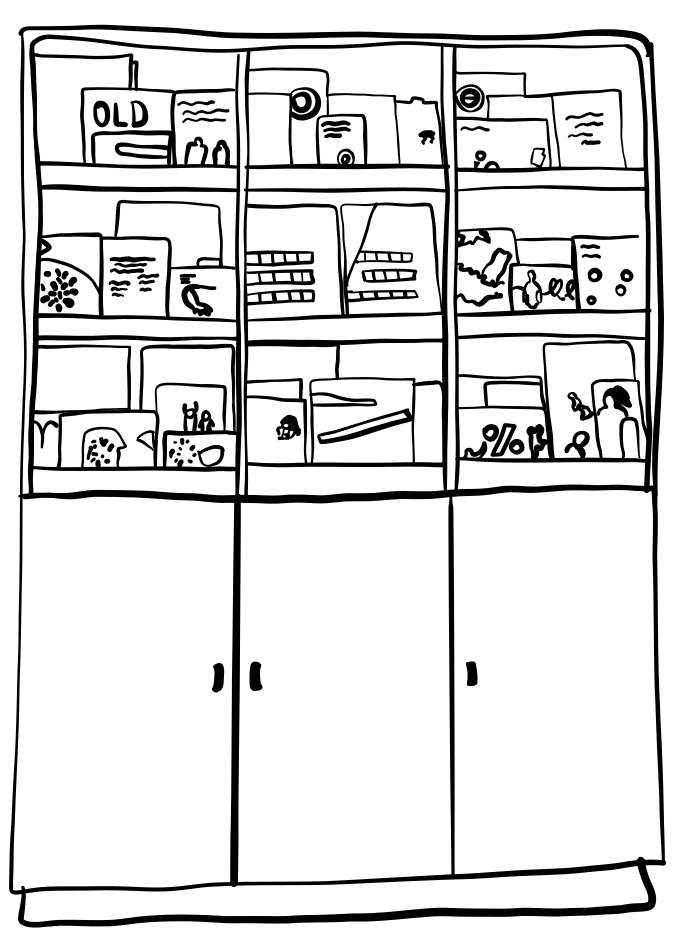
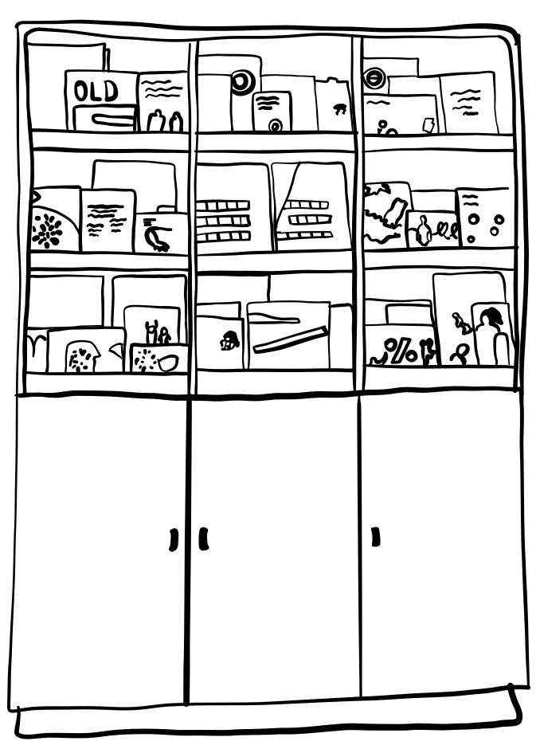

Historiek

Huis van Vrede heeft reeds een lange traditie in hulpverlening aan thuislozen. De vzw is in 1991 ontstaan als een kleinschalig voormalig onthaaltehuis voor mannen en vrouwen met een begeleidingsaanbod vanaf 1996. Vanaf 1998 heeft Huis van Vrede jarenlang de werking Puerto – begeleid wonen voor thuislozen – samen met het CAW Brussel uitgebaat. Beide onthaaltehuizen bestaan niet meer en kregen een nieuwe bestemming onder de vorm van duurzame woningen, beheerd door externe SVK.
 

Als erkend centrum voor thuisbegeleiding voor het behoud van de woning kende de vzw haar eerste levenslicht in januari 2006. In 2017 ging Huis van Vrede ook een samenwerking aan met Station Logement (Housing First Diogenes). Vanaf 2023 is de vzw volledig autonoom en voert haar opdrachten zelfstandig uit.